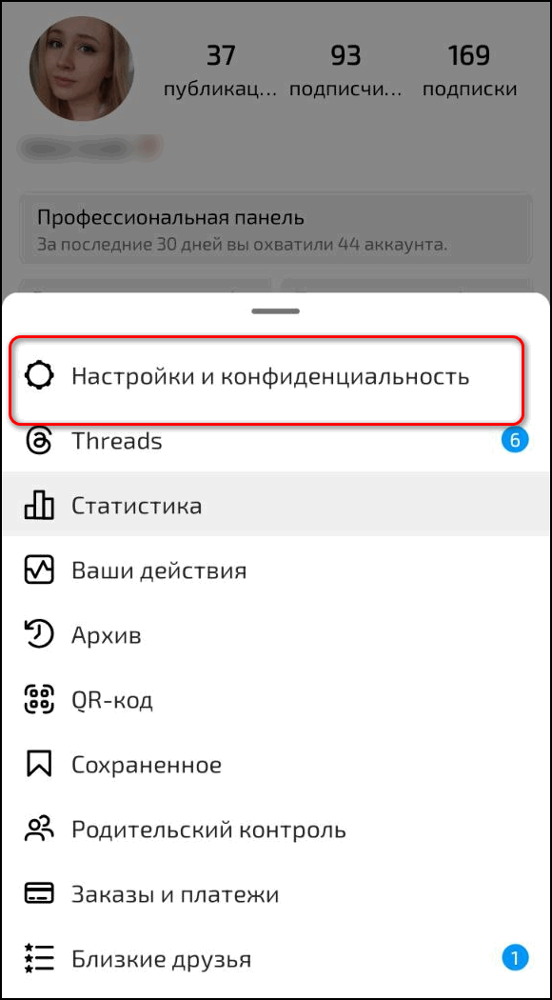
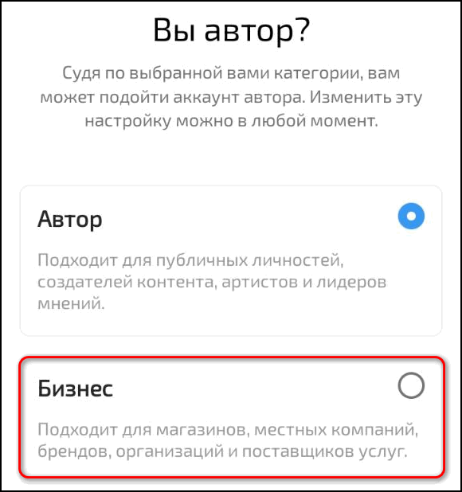
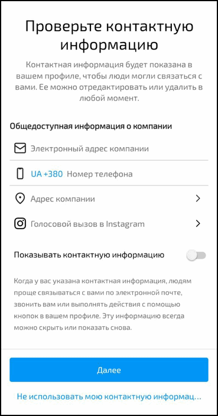
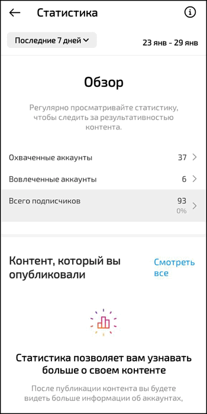

Бизнес-профиль в Инстаграме: как переключиться на него

Сделать бизнес-аккаунт в Инстаграме* несложно: нужно перейти к настройкам и подтвердить активацию одноименного пункта. Обладатели профилей с таким статусом могут работать со статистикой, запускать промоакции, указывать цены и даже официально получать доход.
Подключить бизнес-профиль в Инстаграме*
Для запуска своего небольшого бизнеса в Инстаграме* не нужна регистрация торговой марки или дополнительные налоги, достаточно подключить новый статус профиля через настройки страницы. Чтобы активировать функцию:
- Зайти в Инстаграм* — Настройки и конфиденциальность.
- Тип аккаунта и инструменты — Перейти на профессиональный аккаунт.

- Бизнес — указать категорию.

- Заполнить личную информацию: контактный номер телефона, адрес электронной почты, добавить биографию.
- Сохранить внесенные изменения.
Если в профиле чего-то не хватает — Инстаграм* выдаст подсказку. Появится прогресс заполнения и подготовки к рекламе, привлечению новых подписчиков.
Нужен ли Facebook* для подключения
До этого, чтобы включить бизнес-аккаунт в Инстаграме* нужно было создавать сообщество в Facebook* . С последними изменениями, чтобы работать с таким типом профилей дополнительные действия не нужны.
Но если сообщество есть, то его можно связаться с Инстаграмом* и управлять страницами с помощью Creator Studio: отвечать на комментарии, планировать публикации, следить за запущенными промоакциями. Чтобы связать бизнес-страницу в Фейсбуке* с Инстаграмом*:
- Зайти в Фейсбук* — перейти в своё сообщество.
- Выбрать: «Настройки» — пункт: «Instagram*».
- Добавить аккаунт — ввести данные для авторизации.
- Подтвердить привязку.
Теперь можно воспользоваться Creator Studio, чтобы управлять несколькими страницами. Кроме такого варианта, связывая два аккаунта пользователь сможет восстанавливать Инстаграм*, если вдруг забыл пароль.
Заполнение страницы
После создания страницы пользователю будет предложено заполнить личную информацию, куда входит:
- адрес электронной почты;
- номер телефона;
- фактический адрес;
- разрешение на голосовой вызов в Instagram*.
Но владелец страницы может отказаться от показа личной информации и потенциальным покупателям нужно будет спрашивать в личных сообщениях или комментариях.

Другая информация, которую нужно указать:- искать вдохновение. Подписаться на авторов с подобным контентом;
- расширить аудиторию. Отправить приглашение друзьям по email, в другие социальные сети и разрешить доступ к телефонной книге, тем самым получив лояльную аудиторию и увеличив вовлеченность;
- расскажите о себе. Создать публикацию с рассказом о своей деятельности;
- указать цели. Выбрать то, что интересует владельца в продвижении больше всего: охват, взаимодействие с постами, комментарии, личные сообщения.
Новоиспеченным бизнесменам также предложена справочная информация о том, как работает реклама в социальной сети. Чем больше пользователь указывает информации о себе, тем быстрее Инстаграм* продвигает аккаунт в Рекомендованное.
Статистика и данные компании
Преимущество бизнес профиля в наличии статистики: владелец может отследить откуда пришла целевая аудитория, определить их интересы и ценовой диапазон.

У таких аккаунтов больше инструментов при создании таргетированной рекламы: отдельная настройка бюджета и тестовые запуски, выбор площадки размещения, привлечение на свой сайт.Брендированный контент
Брендированный контент – еще одна особенность бизнес-страниц. Это публикация, которая была создана или оплачена брендом. Фактически, это рекламная агитация, не преследующая агрессивных целей. У такого способа продвижения продукции есть «плюсы»:
- постоянная ссылка на спонсора. Над публикацией будет название страницы/бренда, оплатившей рекламу;
- официально. Сотрудничество можно подтвердить, даже если пост был стерт одной из сторон;
- совместная статистика с блогером.
Брендированный контент включает соавторство, где просматривать данные смогут обе стороны. Эта функция также отличает «бизнес» от личного и автора. Владелец профиля может создать личный список сотрудничества. Это возможно через настройки:
- Зайти в Инстаграм* - Настройки.
- Инструменты и настройки для бизнеса – Брендированный контент.
- Одобрение контента – вписать в поиск никнеймы авторов от которых предложения будут одобрены автоматически.
Инстаграм* предлагает два варианта: запретить одобрение отметок автоматически или дать владельцу возможность делать это вручную. Как только появляется уведомление, что кто-то из блогеров отметил контент как «брендированный» и указал ссылку на ваш аккаунт – от такого предложения можно отказаться. Функция пригодится тем, кто внимательно следит за каждой рекламной интеграцией: не у каждого блогера хорошая репутация и не с каждым сотрудничество обернется новой лояльной аудиторией. Настроив бизнес-страницу в Инстаграме*, у предпринимателя появится еще один мини-сайт, который принесет доход и расширит возможности в рекламе.
Профессиональный аккаунт в Инстаграме*
Профессиональный аккаунт или профиль «Автора» предназначен для блогеров, самозанятых и создателей цифрового контента. Это те, с кем могут официально сотрудничать владельцы бизнес-страниц и получать эффективные рекламные интеграции. Чтобы переключиться на профессиональный аккаунт, нужно перейти в раздел: «Тип аккаунта и инструменты», выбрать тип «Автор». У такого профиля меньше возможностей в продвижении, зато есть разделение Директа, статус монетизации и работа с шаблонами ответов на сообщения. Отмечают, что еще один «плюс» - расширенный музыкальный каталог, в сравнение с бизнес-статусом: предпринимателям доступен каталог, где отсутствуют треки с пометкой «не для коммерции».
Отличия автора и бизнес
Чтобы определиться со статусом, нужно знать преимущества и недостатки обеих типов профилей:
- у бизнеса ограниченный список треков, доступный для создания Историй и Рилс;
- у владельцев профессиональных аккаунтов нет функции: «Магазин». Эта прямая покупка-продажа через социальную сеть, а оплату или возврат можно оспорить в разделе: «Финансовые проблемы» с технической поддержкой Инстаграма*;
- монетизация деятельности. Авторы могут напрямую получать доход из социальной сети;
- кнопка действий для владельцев «Бизнеса» делает переход на сайт проще, чем привлекает потенциальных покупателей.
Пользователи, которые не определились что лучше: настроить бизнес-аккаунт в Инстаграме* или подключить «Автора», должны определиться с целями и задачами своей страницы. Например, если вы хотите стать блогером, но при этом продавать инфопродукты – стоит выбрать «Бизнес». Тогда курсы или сертификаты на услуги можно разместить в своем магазине, созданном внутри социальной сети.
Но если вы решили вернуть обратно личный - посмотрите нашу статью
Заполнить описание страницы Автора
Недостаточно поставить в профиль геолокацию и свое ФИО, чтобы блог стали посещать заинтересованные читатели. Для аккаунта автора, как и для бизнеса, нужно указать категорию в которой будет работать создатель страницы. Согласно выбранной теме, она рекомендуется всем потенциальным подписчикам, у которых в пуле интересов есть такая же. В сравнии с бизнесом, у владельцев авторских блогов отсутствует кнопка действий, можно отказаться от показа контактной информации. Это значит, что описание нужно заполнить своей уникальной историей, сделать заголовок и небольшое приветствие для посетителей. В этом случае раздел «Биография» идентичен личному профилю:
- имя. Придумать интересный заголовок, который виден под аватаркой и отформатирован жирным шрифтом;
- раздел: «Биография» включает до 500 символов с пробелами;
- ссылка. Можно добавить ссылку на свой сайт: визитку, лендинг.
Авторы перестали указывать в описании хештеги, зато добавляют поисковые фразы в основной текст. Вместо «Имени» используют заголовки, которые отражают тематику аккаунта. Например: «Вяжем вместе» или «Мастер экономного меню». Так целевой аудитории будет проще искать авторов с интересным контентом.
Продвижение аккаунта в Инстаграме*
Создав бизнес-страницу в Инстаграме*, владелец должен озадачиться способами продвижения. Это может быть естественный вариант (регулярно публиковать новый контент, добавлять Истории, пробовать новые форматы), через промокампании или накрутка просмотров, подписчиков и комментариев. Все три способа актуальны на разных этапах работы с блогом, некоторые парсят аудиторию конкурентов, чтобы попробовать переманить лояльных покупателей себе в блог/магазин. Кто то смотрит чужие фото и видео конкурентов, чтобы быть в тренде и брать идеи себе. На первом этапе, как только страница была создана, наполнена небольшим количеством контента, но уже стала получать первую аудиторию – можно воспользоваться накруткой. При выборе сервиса или биржи нужно опираться на подбор ботов по параметрам:
- геолокация. Выбирать ту страну/город, которые владелец страницы считает своей целевой аудиторией;
- реальные пользователи. Люди, которые могут в дальнейшем заинтересоваться блогом и остаться в активных подписчиках;
- защита от отписок. Сервисы предлагают защиту на 30 дней – полгода, что накрученные подписчики останутся.
Обращаясь к такому методу, нужно помнить о лимитах, вероятности получить блокировку от социальной сети. Промокампании или реклама внутри самой социальной сети – следующий этап, который необходим для эффективного продвижения страницы. В этом случае лучше не поскупиться и к запуску первой рекламы привлечь специалиста. Вместе с ним определить: тип аудитории, основные и побочные интересы, возрастную категорию и половую принадлежность целевой аудитории. Провести тест-запуск с разным бюджетом и временем на продвижение публикаций. Естественные способы продвижения предполагают постоянную включенность в развитие бизнес-аккаунта. Владелец должен постоянно пополнять Ленту новыми постами, добавлять Истории и Рилсы. Особое внимание уделить видеоконтенту, потому что он чаще остальных попадает в Рекомендации. Как дополнительный вариант: использовать хештеги и геометки, соответствующие тематике поста и стране/городу где находится бизнес.